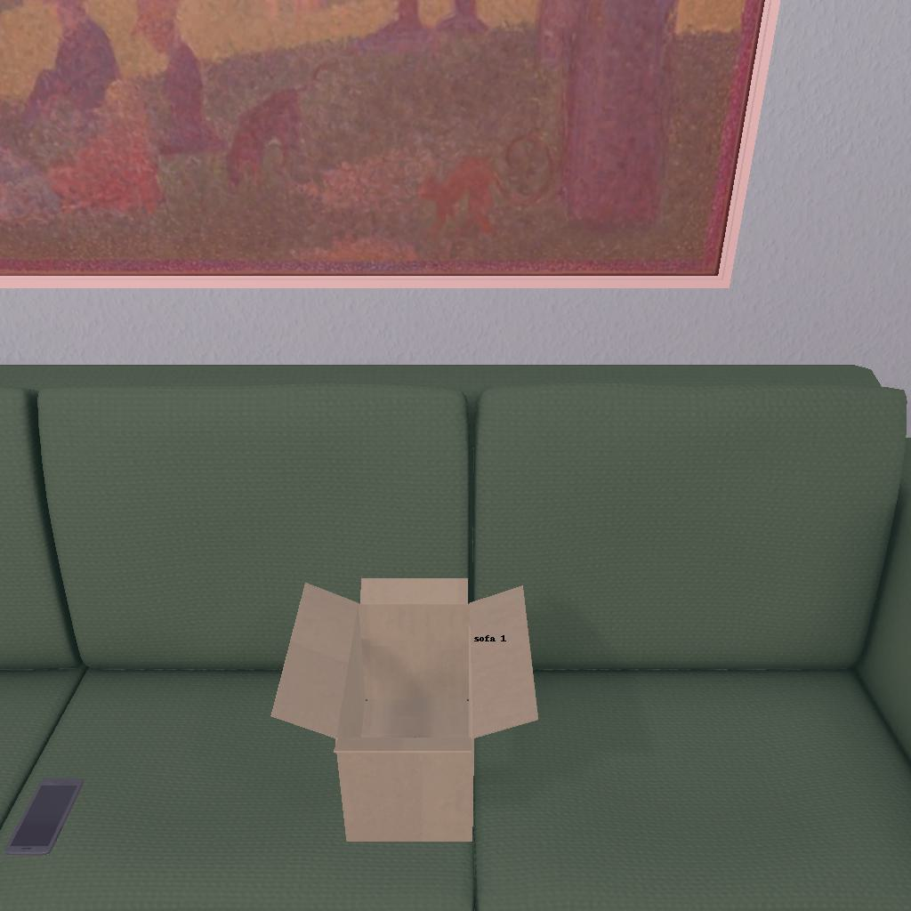

---------------------------------------------------------task: 5---------------------------------------------------------
--------------------------------------------------------------------------------------------------------------------------------------------------------------------
--------------------------------------------------------------------------------------------------------------------------------------------------------------------
Step:--------------------------------------------------------------------------0-------------------------------------------------------------------------------
----------------------------------------
VLM Prompt:
Image1:
**Instruction**
1. Analyze the provided image to identify all visible household objects, focusing on those relevant to the task description "put some book on armchair."
2. Use the analysis of the image and the task hint "The agent must find an object of the desired type, pick it up, find the correct location to place it, and put it down there." to answer the question: what is the most reasonable action in the choices for the task description "put some book on armchair"?
4. Decide and write the answer using the template: The answer is: (i): , where i is the real number. If there is no desired object in the image, search every place based on **Initial Observation** to find the object. And if no one is exactly correct, choose a similar answer.
**Initial Observation**
You are in the middle of a room. Looking quickly around you, you can see armchair (1), sofa (1), coffeetable (1), drawer (1-4), sidetable (1-3), dresser (1)
**Answer Choices**
(1): go to armchair 1
(2): go to sofa 1
(3): go to coffeetable 1
(4): go to drawer 1
(5): go to sidetable 1
(6): go to dresser 1
(7): go to drawer 2
(8): go to drawer 3
(9): go to drawer 4
(10): go to sidetable 2
(11): go to sidetable 3
**Answer**
Let's think step by step by following the instructions.
----------------------------------------
----------------------------------------
Original Response:
First, we analyze the image provided. We can see a sofa with a box labeled "sofa 1" on it. There is also a painting above the sofa and a mobile phone on the sofa, but these are not relevant to the task at hand. Since the task is to "put some book on armchair," we do not see any books or an armchair in the image.
Based on the task hint, the agent must find an object of the desired type, which is a book in this case. Given that there is no book visible in the image, the agent would need to search every place based on the Initial Observation.
Considering the Initial Observation, we have multiple options to search for a book, such as the drawers, sidetables, or dresser. Since books are commonly stored in drawers or on sidetables, these seem like the most reasonable places to start searching.
The answer is: (4): go to drawer 1. If a book is not found there, the agent can proceed to check the other drawers, sidetables, or dresser.
----------------------------------------
----------------------------------------
>>> Refine Original VLM Response and Get Pure Action: go to drawer 1
----------------------------------------
-----------------------------------------------------------------
Running time: 10.753814935684204 seconds
Total Money: 1.94002
-----------------------------------------------------------------
-----------------------------------------------------------------
Text Observation:You arrive at loc 3. The drawer 1 is closed.
-----------------------------------------------------------------
UNSUCCEED